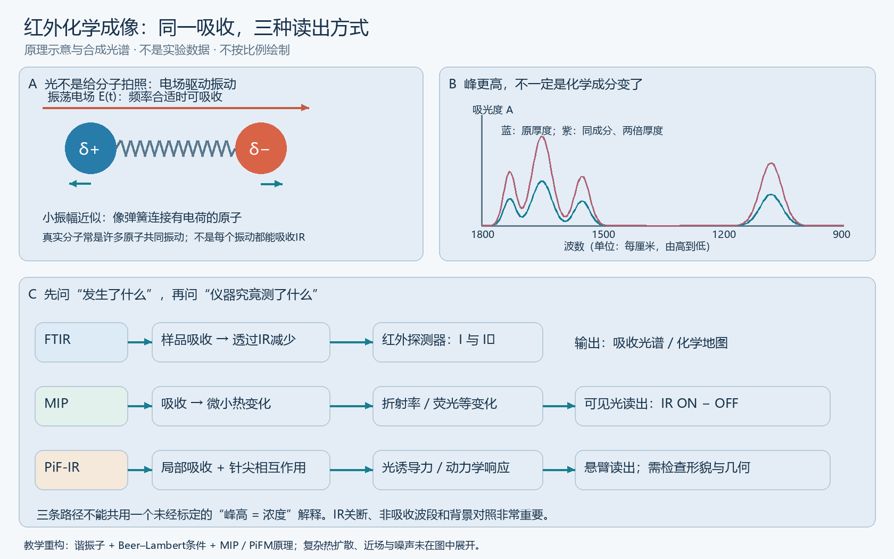

1. 建立物理图像
红外选择分子振动，吸收产生微小温度变化，再用可见光读出折射率等变化。先看第1页原理图。
先读：PDF第1页§2.1、Fig.1；第2页§2.2–2.4
从分子吸收，到组织化学地图，再到细胞器与活体动态。用一条清楚的信号链理解仪器，沿真实问题读近期研究。
先看下面的图，读2025教学综述第1页与2026 PiF-IR问答第1–3页。产物是一张信号链图、一个可靠结论、两个替代解释。申请准备不需要等待全部基础课补完。

红外光的电场与分子偶极耦合，在允许频率附近激发振动。真实生物分子有耦合的正常模式：相互作用、含水量、排列和采样条件都可能影响光谱。
MIP用红外选择吸收，再用可见光读出吸收后的微小变化；PiF-IR通过针尖局部相互作用和悬臂响应测量。先问“仪器读到了什么”，才能判断“样品发生了什么”。
基础补读：Larkin 2011第2–3章、Stuart 2004第1／3／7章。完整本地指南有实际教材入口与页码；此公开页不分发教材全文。
Herschel在红色之外用温度观测光谱。它是辐射发现，还不是现代化学鉴别。
核对来源 ↗系统参考谱让不同物质可以比较；混合物和测量条件仍使归属变复杂。
核对来源 ↗干涉图经计算还原光谱，促进速度、通光与常规分析；样品背景不会因此消失。
核对来源 ↗红外显微把位置与化学联系起来；远场中红外的长波长限制细胞内部细节。
核对来源 ↗针尖／力读出进入表面局部；可见光MIP读出吸收后的变化。它们适合的问题与限制不同。
核对来源 ↗视频速率、皮肤活体、Chem-SIM和流式：关注新装置让什么生物问题可以被测量。
核对来源 ↗这是有来源的教学路线，省略了许多并行发展。新技术不全面替代旧技术；参考谱、样品制备、背景、几何和验证始终重要。
红外选择分子振动，吸收产生微小温度变化，再用可见光读出折射率等变化。先看第1页原理图。
先读：PDF第1页§2.1、Fig.1；第2页§2.2–2.4
了解PiF-IR实际读出，以及形貌、几何和力信号之间的关系。预印本中的最高指标不是每个样品的保证。
先读：PDF第1–3页，§2.1–2.3、Fig.1–2
Mid-infrared photo-induced force microscopy (IR-PiFM/PiF-IR) -- Answers to some questions
Daniela Täuber
原始来源 ↗DOI: 10.48550/arXiv.2605.01940
通过改进收光和抑制噪声，研究活体皮肤中的化学信息。成像结果不是疾病治疗结论。
先读：PDF第1页摘要、第2–3页Fig.1及Results开头
Ultrasensitive in vivo infrared spectroscopic imaging via oblique photothermal microscopy
Mingsheng Li; Sheng Xiao; Hongli Ni; Guangrui Ding; Yuhao Yuan; Carolyn Marar; Jerome Mertz; Ji-Xin Cheng
原始来源 ↗DOI: 10.1038/s41467-025-61332-w
IR诱导荧光变化，结合结构光与重建得到细胞器化学图像。荧光参与读出，不应称整个系统无标记。
先读：PDF第1–3页，Fig.1–3；先不读重建推导
Chem-SIM: SIM-resolved chemical imaging via wide-field mid-infrared photothermal modulation of fluorescence
Dashan Dong; Danchen Jia; Xinyan Teng; Jianpeng Ao; George Abu-Aqil; Biwen Gao; Meng Zhang; Qing Xia; Ji-Xin Cheng
原始来源 ↗DOI: 10.1038/s41467-026-76934-1
细胞运动会污染ON/OFF差分；用单次曝光编码两种状态。该结果为预印本，需结合后续验证。
先读：PDF第1页摘要、第3–4页Results与Fig.1说明
Mid-infrared photothermal imaging flow cytometry
Yusei Sugawara; Keiichiro Toda; Genki Ishigane; Masato Fukushima; Takuro Ideguchi
原始来源 ↗DOI: 10.48550/arXiv.2606.19842
优化热时序、激光和相机，观察活细胞动态。理解速度、噪声、分辨率的共同权衡。
先读：PDF第1页；Fig.2原理、Fig.5活细胞与Fig.7组分分析
Label-free mid-infrared photothermal live-cell imaging beyond video rate
Genki Ishigane; Keiichiro Toda; Miu Tamamitsu; Hiroyuki Shimada; Venkata Ramaiah Badarla; Takuro Ideguchi
原始来源 ↗DOI: 10.1038/s41377-023-01214-2
预印本与正式论文明确区分。指定图页为入门选读，不等于全文评审；点击原始来源获取可用版本。
2027年6月14–18日，挪威Ås；4月1日至5月30日为必修线上预课，实体周需到场。内容包含IR吸收、细胞生物学、预处理、PCA与FTIR成像。
现在尚未开放注册。 junior researchers类别1500 NOK，食宿不含；Erasmus/BIP资助须核协议与预算。线上预课不是现在免费公开的整套录像。
学校官方信息 ↗光子→物镜→PSF→相机。理解分辨率、信噪比、标记与对照。
官方学习入口 ↗膜的哪一侧暴露？吸附、进入内部和糖基化是不同问题。
官方学习入口 ↗识别→换能→校准。理解选择性、检出限、漂移与可逆性。
官方学习入口 ↗不同照明提供不同信息；用前向模型理解傅里叶叠层。
官方学习入口 ↗生物信号→界面→电路→反馈。先分清记录、刺激与身体交互。
官方学习入口 ↗